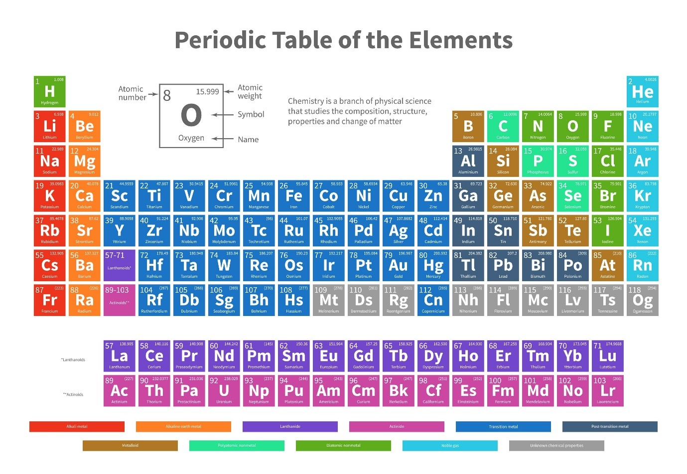

Struktur Atom & Sistem Periodik: Mengenal “Batu Bata†Penyusun Obat
Mengapa ini penting? Di farmasi, tiap molekul obat adalah “gedung†dan atom adalah “batu batanya”.
Memahami struktur atom & tabel periodik membantu kita menebak sifat-sifat obat, kestabilan, dan cara formulasi.

Tabel periodik sebagai “peta†sifat kimia.
1. Evolusi Model Atom
Dari Dalton → Thomson → Rutherford → Bohr → Model mekanika kuantum. Setiap tahap memperbaiki pemahaman kita
tentang posisi elektron dan energi.
🤔 Bagaimana model atom berkembang? (klik untuk ringkasan)
Dalton: atom bola pejal · Thomson: roti kismis ·
Rutherford: inti kecil bermuatan + · Bohr: lintasan terkuantisasi ·
Modern: orbital probabilistik.
2. Sistem Periodik sebagai “Peta”
Periode: jumlah kulit elektron.
Golongan: kesamaan elektron valensi → sifat kimia mirip.
Mini Cek Konsep: Unsur di golongan 1 umumnya…
lihat jawaban
logam reaktif, membentuk kation +1, dan basa kuat dengan air.